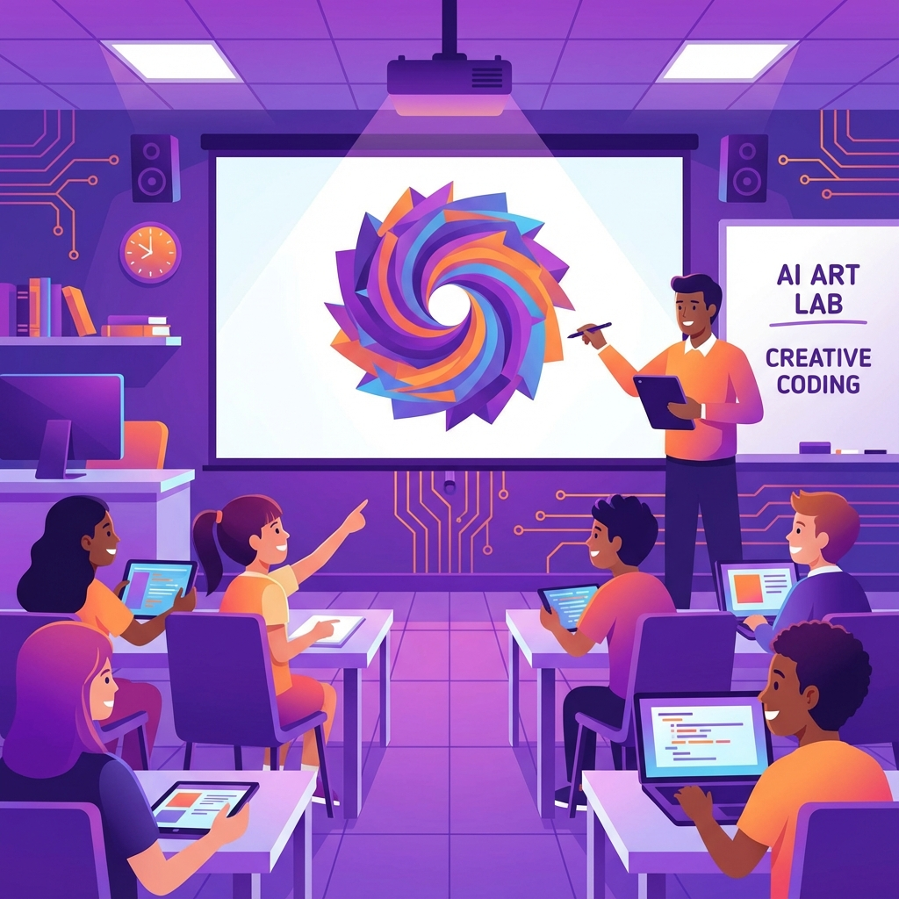
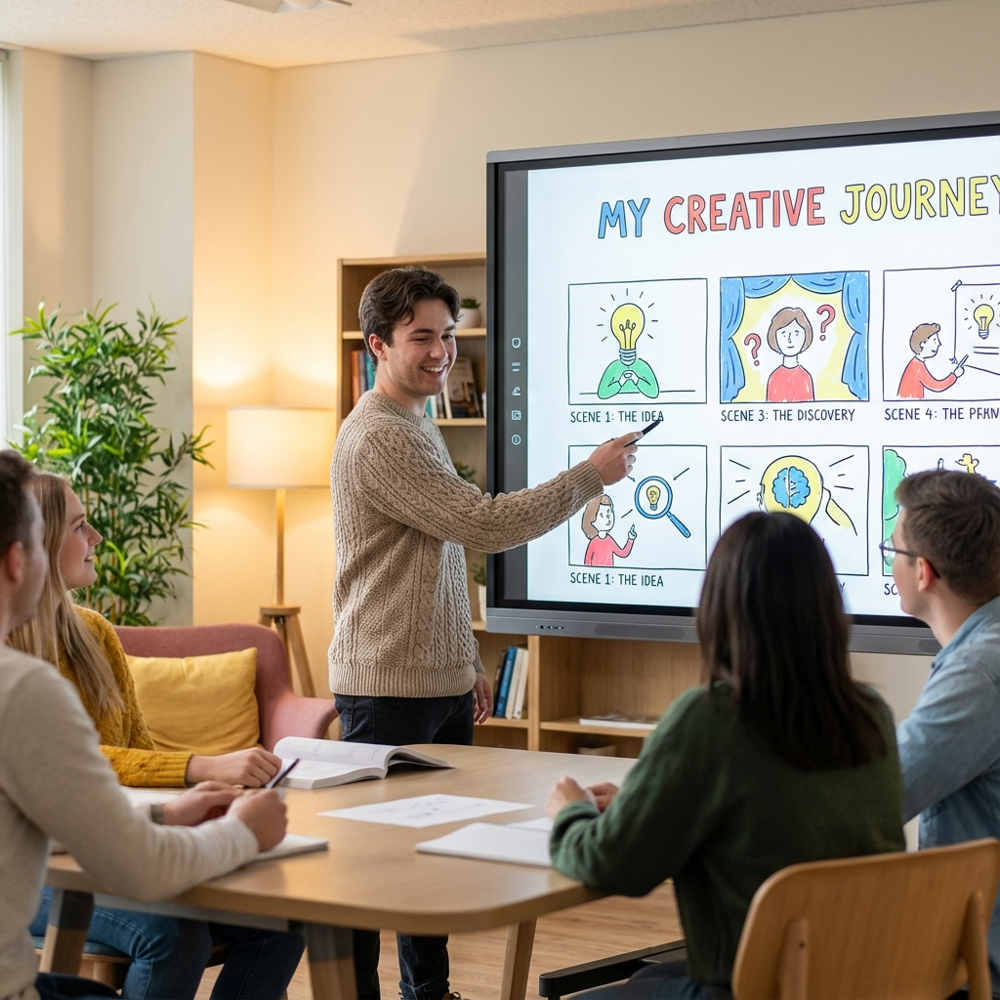

Učit dnes znamená soutěžit o pozornost. Ne s TikTokem, ale s únavou, přetížením a pocitem "k čemu mi to bude". Právě tady mají AI obrázkové nástroje překvapivě silné místo.
Proč by vás to mělo zajímat jako učitele
Protože obraz zjednodušuje vysvětlení, zrychluje pochopení a zvyšuje zapojení studentů. Nejde o efekt pro efekt. Jde o didaktiku.
Praktické využití ve výuce

- Vizualizace abstraktních témat: dějiny, společenské procesy, přírodní jevy, technické systémy.
- Podpora porozumění textu: literatura, cizí jazyky, odborné texty.
- Rychlá příprava materiálů: prezentace, pracovní listy, infografiky, plakáty.
- Aktivní zapojení studentů: místo pasivního sledování studenti tvoří, vysvětlují, obhajují svá vizuální řešení.
💡 Co to přináší vám?
- Úspora času - nemusíte hledat "ten správný obrázek", vytvoříte ho přesně na míru.
- Flexibilita - upravíte obrázek podle úrovně třídy, tématu i cíle hodiny.
- Zpestření výuky bez cirkusu a zbytečné technické složitosti.
- Rozvoj digitální gramotnosti žáků, který dává smysl a není samoúčelný.
Etika a odpovědnost jako součást výuky
AI obrázky jsou ideální příležitostí, jak přirozeně otevřít témata:
- autorství a originalita,
- dezinformace a manipulace obrazem,
- rozdíl mezi realitou a generovaným obsahem.
Tohle nejsou "extra témata". To je moderní občanská výchova v praxi.
⚠️ Důležitá poznámka na závěr
AI nenahrazuje učitele. Nenahrazuje myšlení. Nenahrazuje porozumění. Je to nástroj, který zjednodušuje přípravu, rozšiřuje možnosti výkladu a dává studentům důvod se ptát. A to je přesně to, co dobrá výuka potřebuje.
Přehled AI obrázkových nástrojů - pro učitele
Hodnoceno z pohledu: efektivita, kontrola, použitelnost ve výuce.
1. DALL·E (ChatGPT)
Proč dává smysl učitelům: jeden nástroj na text i obrázky, rychlá příprava materiálů, minimální technické bariéry.
Ideální pro: ilustrace k výkladu, pracovní listy, ukázkové vizualizace pojmů.
Pedagogická výhoda: snadno vysvětlitelný princip studentům, dobrý nástroj pro etiku AI (citace, autorství).
2. Canva for Education
Proč je to učitelský pracant: obrázek + výukový materiál v jednom, spolupráce se studenty, sdílení, úpravy, šablony.
Ideální pro: prezentace, infografiky, plakáty do třídy, projektovou výuku.
Pedagogická výhoda: studenti pracují strukturovaně, učitel má kontrolu nad výstupem.
3. Adobe Firefly
Proč je zajímavé pro školy: důraz na etiku a legálnost, vhodné pro oficiální materiály.
Ideální pro: školní web, oficiální prezentace, materiály pro rodiče a veřejnost.
Pedagogická výhoda: minimální riziko porušení autorských práv.
4. Midjourney (pro pokročilé učitele)
Proč má smysl jen někdy: špičková vizuální kvalita, silný "wow efekt".
Ideální pro: inspirační ukázky, umělecké a výtvarné obory, diskusi o limitech AI.
Limity ve škole: technicky náročnější, nevhodné pro běžné žáky bez vedení.
5. Specializované nástroje (věda, technika)
Např. nástroje pro schémata, technické ilustrace, jednoduché diagramy.
Ideální pro: fyziku, biologii, odborné předměty, vysvětlení procesů krok za krokem.
Stručné porovnání pohledem reality
Student potřebuje:
- rychlý výsledek
- jednoduché ovládání
- prostor pro kreativitu
Učitel potřebuje:
- spolehlivost
- kontrolu nad výstupem
- úsporu času
- pedagogický smysl
Jeden nástroj to všechno neumí. A to je v pořádku.
Kreativní cvičení pro studenty
Cvičení 1: Vizuální slovník
Vyberte 10 složitých slova z angličtiny a vytvořte pro každé vizuální reprezentaci. Pomůže vám to lépe si je zapamatovat!
Cvičení 2: Reimaginace
Vezměte známý obraz (Mona Lisa, Starry Night...) a přepište ho do jiného stylu nebo éry. "Mona Lisa jako cyberpunk portrét v roce 2080".
Cvičení 3: Příběh v obrázcích
Vytvořte sérii 4-6 obrázků, které vyprávějí krátký příběh. Pouze vizuálně, bez textu. Můžete to použít pro kreativní psaní nebo prezentaci.
Cvičení 4: Vědecká vizualizace
Vyberte složitý vědecký koncept (černá díra, evaporace, fotosyntéza...) a vytvořte sérii obrázků, které ho vysvětlují krok za krokem.